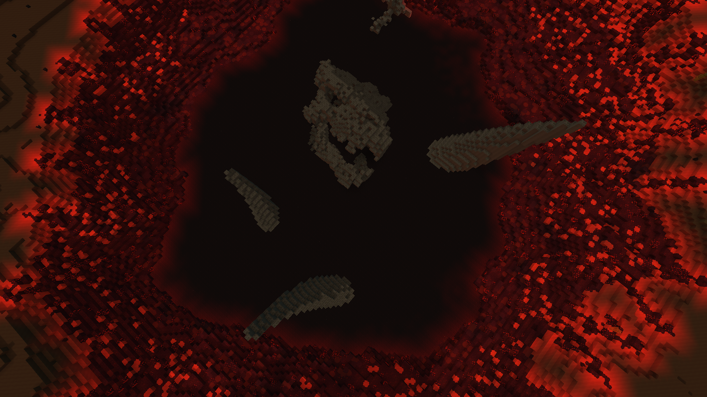
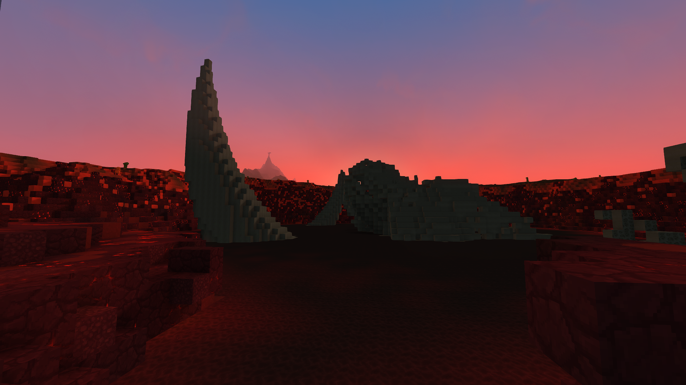
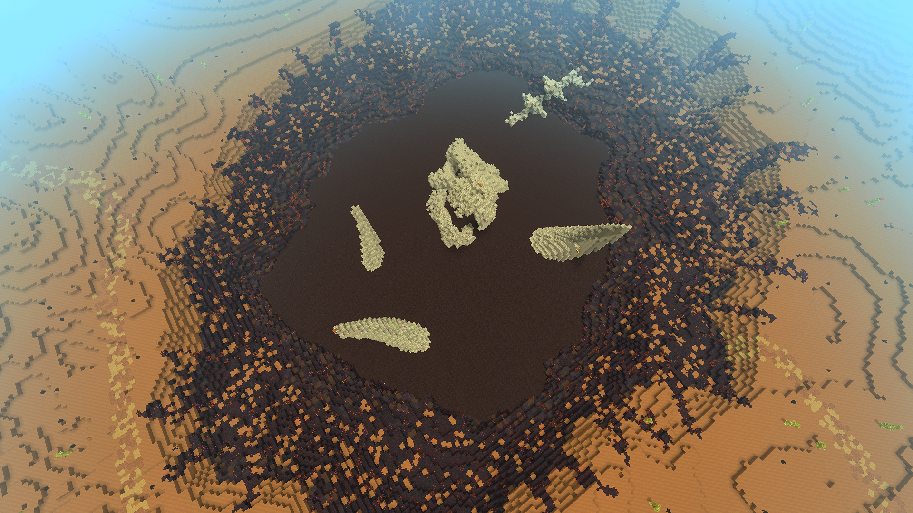

Gaping like a jagged, weeping wound in the heart of the red desert, Darvaza is a massive, tar-filled hole surrounded by an ominous ring of volcanic stone.
Darvaza

| Location Information | |
|---|---|
| Coordinates | X: 617, Z: 787 |
| Area Type | Rural Ruins |
| Mob Threat | Very High |
| Bandit Threat | High |
| Number of Chests | 19 |
| Water Source | Yes |
| Clean Water Source | No |
| Fireplace | No |
| Chef's Stove | No |
| Workbench | No |
| Available Loot | ||
|---|---|---|
| 🍎 Food | ✗ | |
| 🥛 Civilian | Tier 1 | ✗ | |
| ✂️ Civilian | Tier 2 | ✗ | |
| 🛠️ Civilian | Tier 3 | 4 | |
| 🛡️ Military | Tier 1 | ✗ | |
| ⚔️ Military | Tier 2 | 4 | |
| 🏹 Military | Tier 3 | 11 | |
| 🌟 Legendary | ✗ | |
Lore
Gaping like a jagged, weeping wound in the heart of the red desert, Darvaza is a massive, tar-filled hole surrounded by an ominous ring of volcanic stone.
The Black Abyss
Situated deep within the scorching red desert biome, Darvaza stands out as a grim and punishing landmark. The crater is defined by a heavy, glowing perimeter of volcanic stone that frames a deep basin of thick, bubbling black tar. It is a morbidly silent place, earned by its reputation as one of the few locations completely surrounded by scattered, bleached skeletons—the remains of foolish travelers and migrating fauna drawn to the basin, only to be trapped by its lethal topography.
Despite its density, the viscous tar is actually possible to swim in, though navigating the sludge is an exhausting and incredibly dangerous endeavor as the tar is filled to the brim with piranhas.
Anatomy of the Pit
- The jagged, glowing volcanic stone ridge that encircles the entire perimeter of the pit, radiating intense subterranean heat.
- The massive, fossilized remains of a giant unknown creature breaking through the tar's surface at the center of the pool.
- The surrounding desert dunes, making the dark crater visible on regional maps as a stark, contrasting scar.
The Ancient Catch and The Predators Below
The defining feature of Darvaza is the skeletal remains of a giant, prehistoric unknown creature frozen forever in the center of the basin. Towering ribs and massive spinal columns protrude directly out of the muck, serving as grim evidence that the beast became stuck in the tar eons ago and never got out.
While the ancient colossus is long dead, the tar pool is far from empty. A vicious breed of tar-dwelling piranhas infests the murky depths, aggressively attacking any adventurer brave or desperate enough to take a swim. However, for survivalists equipped to handle the biting swarm, these predatory fish are highly abundant and can be harvested as a phenomenal, high-yield source of food in an otherwise barren desert.
Present Day
For players charting the red desert, Darvaza is a high-risk, high-reward tactical checkpoint. While there are no traditional treasure chests lining the volcanic lip, the ability to farm the aggressive piranhas provides an endless supply of potent rations for long-term desert expeditions. Furthermore, daring players can use the protruding ribs of the ancient creature as makeshift platforms to navigate the pit without touching the sludge, making it a tense but rewarding hunting ground.
Keep your eyes on the horizon for the dark crown of Darvaza. The piranhas below offer a grand feast for a prepared hunter, but if you lose your footing in the thick tar, you might just find your own bones added to the ring of skeletons guarding the pit.
Gallery

